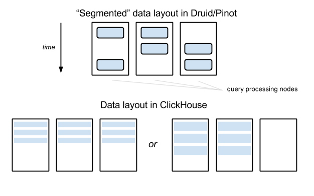

ClickHouse, Druid и Pinot – три открытых хранилища данных, которые позволяют выполнять аналитические запросы на больших объемах данных с интерактивными задержками. Эта статья - перевод подробного сравнения, выполненного Романом Левентовым. 
Подробности реализации ClickHouse стали мне известны от Алексея Зателепина, одного из ключевых разработчиков проекта. Доступная на английском документация достаточно скудна – наилучшим источником информации служат последние четыре секции данной страницы документации.
Я сам участвую в развитии Druid, но у меня нет личной заинтересованности в этой системе - по правде говоря, скорее всего в ближайшее время я перестану заниматься её разработкой. Поэтому читатели могут рассчитывать на отсутствие какой-либо предвзятости.
Всё, что я буду далее писать про Pinot, основывается на странице Архитектура в вики Pinot, а также на других страницах вики в разделе “Проектная документация”. Последний раз они обновлялись в июне 2017 года - больше, чем полгода назад.
Рецензентами оригинальной статьи стали Алексей Зателепин и Виталий Людвиченко (разработчики ClickHouse), Жан Мерлино (самый активный разработчик Druid), Кишор Гопалакришна (архитектор Pinot) и Жан-Француа Им (разработчик Pinot). Мы присоединяемся к благодарности автора и полагаем, что это многократно повышает авторитетность статьи.
Предупреждение: статья достаточно большая, поэтому вполне возможно вы захотите ограничиться прочтением раздела “Заключение” в конце.